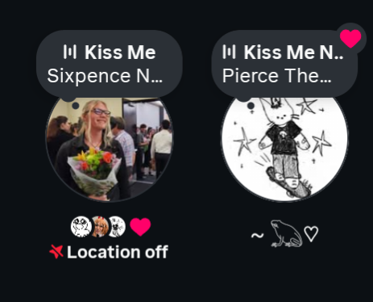

Hi Ash <3
You mean more to me than I should probably put into words, so here's a little playlist of songs that make me think of you:
Song Explanations:
-
Crave
I found Crave while creating this playlist. To me, the song represents the longing and desire to spend and cherish the moments together before they are gone. It feels to me like a reminder to enjoy the time we have together and never take it for granted. While it does suggest to enjoy the feelings before they are gone, I moreso see that as enjoying each individual moment we share as its own that each will come to an end. However, as long as we crave our experiences together, new moments to relish together will continue to come to us forever.
-
Anna Molly
Anna Molly or 'Anomaly' reflects my feelings that you are an anomaly in my life in all the best ways. I truly never expected someone like you to randomly appear in my life. Before we met, there was a sort of cloud that always hung above my head and I felt lacking in any meaningful connections with the people around me (you know the people I was "friends" with before). I had often dreamed and longed to find this emotional link with someone special, as many people do. That first day I saw you with AJ, I could tell you were special, but of course, I did not realize how much so. So, once we began talking, and you showed how much you were capable of being this someone special, I knew that I could find myself with you and finally share something more meaningful. You have been an anomaly of care and kindness in my life, since the first day we talked about your roommates in the halls of the downtown campus.
-
Dear Maria, Count Me In
Dear Maria feels representative of infatuation and the desire to throw yourself into the life of someone special. It displays my pure fascination and desire to be by your side.
-
Kiss Me Now
I did some research on this song. Vic wrote this for his wife to talk about how life moves too fast and sometimes you can miss the best moments waiting for the "perfect" moment. I think this is another very special song for me because I am always afraid of not being in the moment with you and enjoying what we have in it. Every moment with you is so special and I cherish every second, every kiss, every word, every hug, and every laugh.